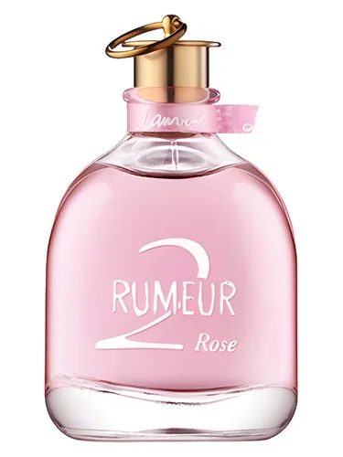

Rumeur 2 Rose
- Para mujer
- Familia cítrica
- Lanzado en 2006
$1,499
Precio de referencia. Te confirmamos el precio final y la presentación por WhatsApp antes de enviar.
Por encargo: lo conseguimos para ti
Cómo huele
Cítrico
Rosa
Floral
Floral blanco
Sus notas
Salida
limónnaranjatoronjabergamotaperanotas verdes
Corazón
rosamagnoliafalso jazmínjazmínmadreselvalirio de los valles
Fondo
almizclepachulíámbar
Rumeur 2 Rose de Lanvin es un perfume cítrico para mujer, lanzado en 2006. Abre con limón y naranja, en el corazón tiene rosa y magnolia y deja un fondo de almizcle y pachulí. Lo que más se siente: cítrico, rosa y floral.